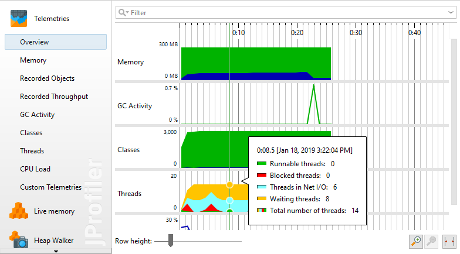
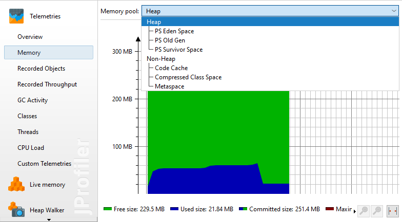
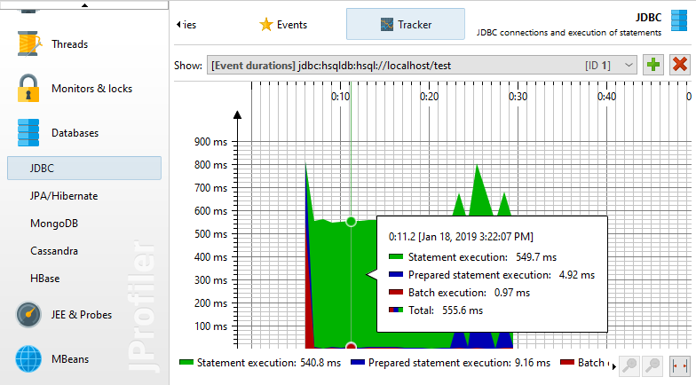
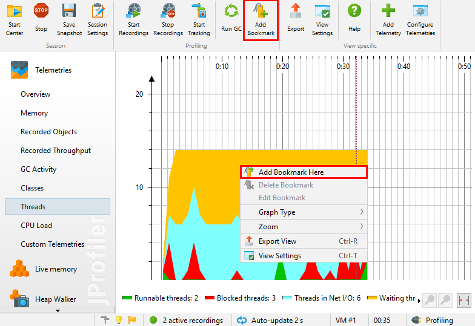
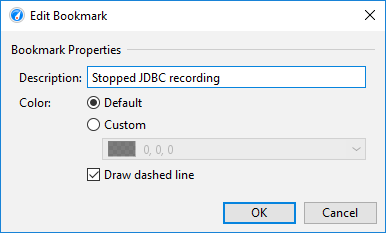
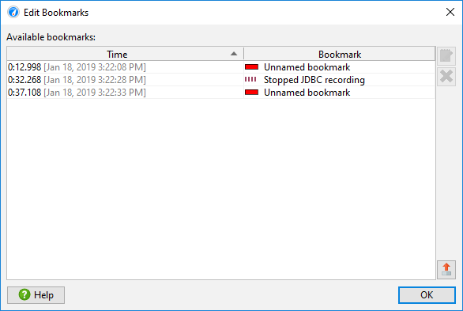
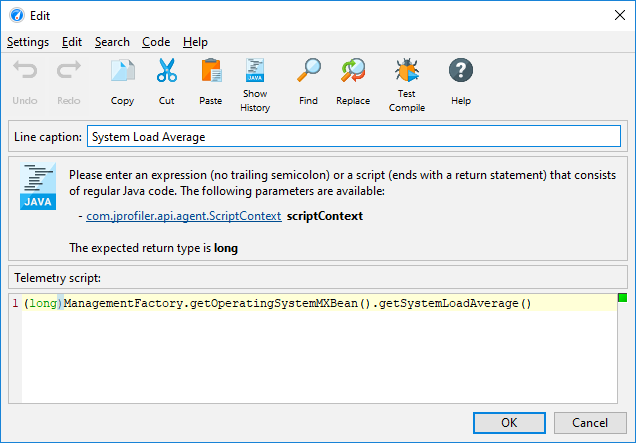
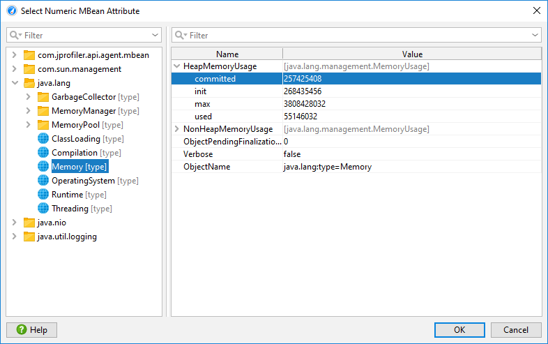
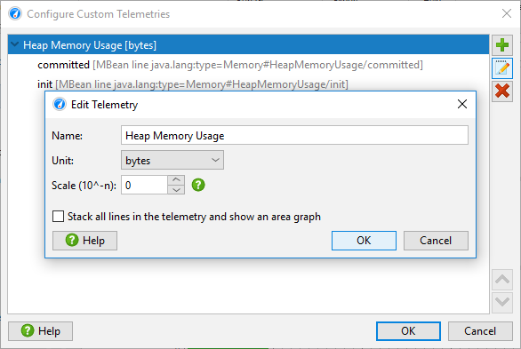
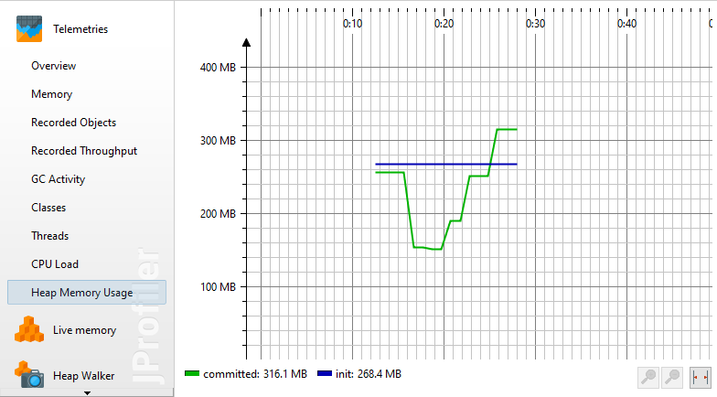

One aspect of profiling is monitoring scalar measurements over time, for example the used heap size. In JProfiler, such graphs are called telemetries. Observing telemetries gives you a better understanding of the profiled software, allows you to correlate important events over different measurements and may prompt you to perform a deeper analysis with other views in JProfiler if you notice unexpected behavior.
In the "VM Telemetries" section of the JProfiler UI, a number of telemetries are recorded by default. For interactive sessions they are always enabled and you do not have to start or stop their recording.
To compare multiple telemetries on the same time axis, the overview shows multiple small-scale telemetries on top of each other with a configurable row height. Clicking on the telemetry title activates the full telemetry view.

The full view shows a legend with current values and may have more options than what is visible in the overview. For example, the "Memory" telemetry allows you to select single memory pools.

Probes also publish telemetries. These telemetries are not included in the "Telemetries" view section, but are part of the "Telemetries" tab of the corresponding probe. Recording of those telemetries is coupled to the recording of their parent probe.
Finally, there are "tracking" telemetries that monitor a scalar value that is selected in another view. For example, the class tracker view allows you to select a class and monitor its instance count over time. Also, each probe has a "Tracker" view where selected hot spots or control objects are monitored.

JProfiler maintains a list of bookmarks that are shown in all telemetries. In an interactive session, you can add a bookmark at the current time by clicking on the Add Bookmark tool bar button, or by using the Add Bookmark Here feature in the context menu.

Bookmarks can not only be created manually, they are added automatically by the recording actions to indicate the beginning and the end of a particular recording. With trigger actions or with the controller API, you can add bookmarks programatically.
Bookmarks have color, a line style and also a name that shows up in the tool tip. You can edit existing bookmarks and change these properties.

If right-clicking several bookmark in a telemetry is too inconvenient, you can use the Profiling->Edit Bookmarks action from the menu to get a list of bookmarks. This is also the place where you can export bookmarks to HTML or CSV.

There are two ways to add your own telemetries: Either you write a script in the JProfiler UI to supply a numeric value or you select a numeric MBean attribute.
To add a custom telemetry, click on the Configure Telemetries tool bar button that is visible in the "Telemetries" section. In a script telemetry, you have access to all classes that are configured in the classpath of the current JProfiler session. If a value is not available directly, add a static method to your application that you can call in this script.

The above example shows a call to a platform MBean. Graphing scalar values of MBeans is more conveniently done with an MBean telemetry. Here, an MBean browser allows you to select a suitable attribute. The attribute value must be numeric.

You can bundle several telemetry lines into a single telemetry. That's why the configuration is split into two parts: the telemetry itself and the telemetry line. In the telemetry line, you just edit the data source and the line caption, in the telemetry you can configure unit, scale and stacking which apply to all contained lines.
In a stacked telemetry, the single telemetry lines are additive and an area graph can be shown. The scale factor is useful to convert a value to a supported unit. For example, if the data source reports kB, the problem is that there is no matching "kB" unit in JProfiler. If you set the scale factor to -3, the values will be converted to bytes and by choosing "bytes" as the unit for the telemetry, JProfiler will automatically display the appropriate aggregate unit in the telemetry.

Custom telemetries are shown at the end of the "Telemetries" section in the order in which they are configured.

At first sight, it would seem that telemetries consume memory linearly with time. However, JProfiler consolidates older values and makes them progressively more coarse-grained in order to limit the total amount of memory consumed per telemetry.
The CPU overhead of telemetries is limited by the fact that their values are only polled once per second. For the standard telemetries, there is no additional overhead for this data collection. For custom telemetries, the overhead is governed by the underlying script or MBean.